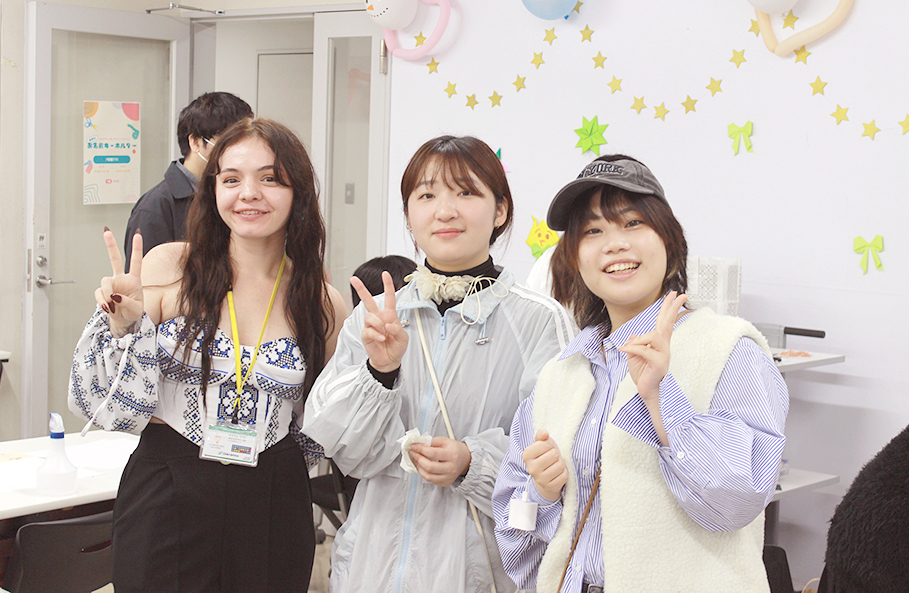
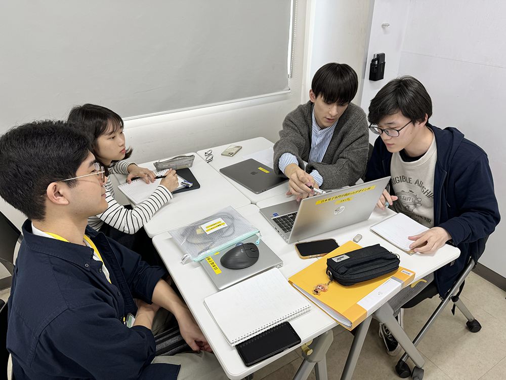
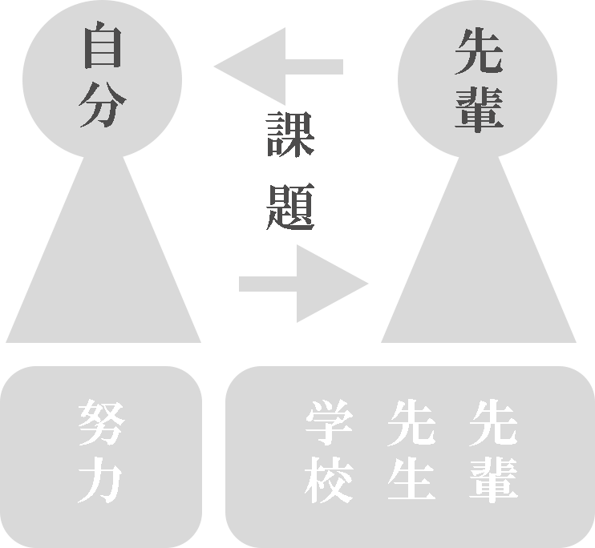

Webデザイン科では


伝統的なIT学科のイメージとは少し異なり、ITの技術力だけでなく、 人とのつながりやコミュニケーションも非常に大切にしています。 そのため、入学直後から学生同士が気軽に交流できる工夫がされています。
入学してすぐに、クラスメイトや先輩たちとミニゲームなどを通じて打ち 解けられる時間が設けられており、知識やスキルの習得だけでなく、 「人との関係づくり」も重視するのが私たちのスタイルです。

実際に
授業が始まってから、最初の大課題も一人でやるのではなく、 担当の二年生の先輩にサポートしてもらいながら進める形式でした。 分からないことがあればすぐに相談できる環境だったので、 不安を感じることなく課題に取り組むことができました。
専門的なスキルだけでなく
日本の文化や人との関わりにも自然と触れる機会が得られたからです。 このような教育スタイルは、特に留学生にとっては日本社会の理解に大きな成長になります。
日本人学生にとっても、ここではスウェーデン、韓国、台湾、ミャンマー、 中国など、さまざまな国から来た学生たちと出会うことができます。 専門的な知識を学びながら、それぞれの国の文化に触れたり、 国を越えた友人関係を築いたりすることができます。